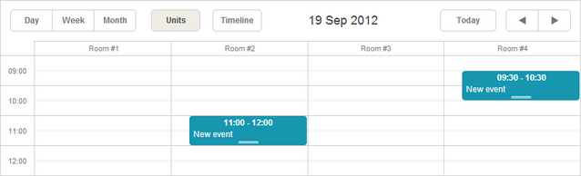
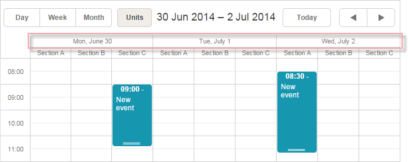
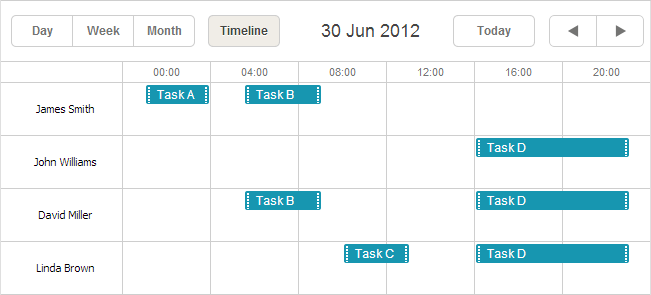
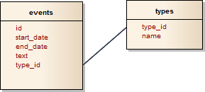
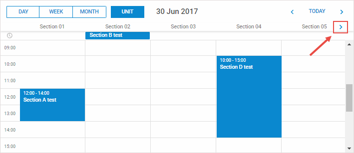

Available only in PRO Edition
This view is available in the Scheduler PRO version only.
The Units view is a view, where X-Axis is based on some property of events (not only on time).

To add the Units view to the scheduler, follow these steps:
<script src="codebase/ext/dhtmlxscheduler_units.js"></script>
<div id="scheduler_here" class="dhx_cal_container" ...>
<div class="dhx_cal_navline">
...
<div class="dhx_cal_tab" name="unit_tab" style="right:280px;"></div>
</div>
...
</div>
//'unit_tab' is the name of our div
scheduler.locale.labels.unit_tab = "Unit"
scheduler.createUnitsView({
name:"unit",
property:"unit_id", //the mapped data property
list:[ //defines the units of the view
{key:1, label:"Section A"},
{key:2, label:"Section B"},
{key:3, label:"Section C"}
]
});
Unlike basic views (such as Day, Month, Year etc.), multiple-resource views(that are Units and Timeline) require data items to have one more mandatory field:
scheduler.createUnitsView({
name:"unit",
property:"unit_id",
list:[
{key:1, label:"Section A"},
{key:2, label:"Section B"},
{key:3, label:"Section C"}
]
});
scheduler.init('scheduler_here');
scheduler.parse([
{id:1, text:"Task1", start_date:"2019-09-17 12:00", end_date:"2019-09-18 21:00",
unit_id:"1"},
{id:2, text:"Task2", start_date:"2019-09-17 09:00", end_date:"2019-09-17 21:00",
unit_id:"3"},
{id:3, text:"Task3", start_date:"2019-09-17 15:00", end_date:"2019-09-18 15:00",
unit_id:"2"}
]);
By comparing unit_id and list.key values, the scheduler assigns events to certain units.
To display units for multiple days, use the days parameter:
scheduler.createUnitsView({
name:"week_unit",
property:"section_id",
list:sections,
days:3 });

Related sample: Multiday Units view
A scale with days is appeared as the 2nd horizontal scale.
To set the format of the 2nd horizontal scale, use the scheduler.templates[name+"_second_scale_date"] template:
scheduler.templates.units_second_scale_date = function(date) {
return scheduler.templates.week_scale_date(date);
};
Note,
scheduler.date.units_start = function (date) {
return scheduler.date.week_start(date);
};
Starting from version 4.1, you have a possibility to assign events to several units.

To enable the possibility:
<script src="codebase/dhtmlxscheduler.js"></script>
<script src="codebase/ext/dhtmlxscheduler_multisection.js"></script> <link rel="stylesheet" href="codebase/dhtmlxscheduler.css" type="text/css">
<script src="codebase/ext/dhtmlxscheduler_units.js"></script>
<script src="codebase/ext/dhtmlxscheduler_multiselect.js"></script>
<script>
scheduler.config.multisection = true; scheduler.init('scheduler_here');
</script>
After this you can specify several sections (by default, delimited with a comma) in the related data property of the event and the event will be rendered in all specified units:
scheduler.createUnitsView({
name: "unit",
list: [
{key: 1, label: "James Smith"},
{key: 2, label: "John Williams"},
{key: 3, label: "David Miller"},
{key: 4, label: "Linda Brown"}],
property: "section_id", ...
});
scheduler.init('scheduler_here', new Date(2019, 5, 30), "unit");
scheduler.parse([
{ id:1, text:"Task A", section_id:'1', ...}, { id:2, text:"Task B", section_id:'1,3', ...}, { id:3, text:"Task C", section_id:'4', ...}, { id:4, text:"Task D", section_id:'2,3,4', ...}]);
Related sample: Multisection events in Timeline and Units view
To set values for the X-Axis, use the list parameter:
scheduler.createUnitsView({
name:"unit",
...
list:[
{key:1, label:"Section A"},
{key:2, label:"Section B"},
{key:3, label:"Section C"}
]
});
To be correctly processed, list items must have 2 mandatory properties:
To load X-Axis data (sections) from the server, use:
scheduler.createUnitsView({
name:"unit",
property:"type_id",
list:scheduler.serverList("units"),
size:20,
step:1
});
where serverList returns a list of options with the name 'units'.
The data response for the load method should contain a collection with the server list name specified in JSON of the following format:
{
"data":[
{
"id":"1",
"start_date":"2019-03-02 15:00:00",
"end_date":"2019-03-04 16:00:00",
"text":"Team meeting",
"type_id":"1"
},
{
"id":"2",
"start_date":"2019-03-02 17:00:00",
"end_date":"2019-03-04 18:00:00",
"text":"Strategy meeting",
"type_id":"2"
}
],
"collections": { "units":[ {"value":"1","label":"Conference room 1"}, {"value":"2","label":"Conference room 2"}, {"value":"3","label":"Conference room 3"} ] }}
You can also use the OptionsConnector connector:
<?php
include('connector-php/codebase/scheduler_connector.php');//includes the file
$res=mysql_connect("localhost","root","");//connects to the server with our DB
mysql_select_db("sampleDB");//connects to the DB.'sampleDB' is the DB's name
$list = new OptionsConnector($res, $dbtype);
$list->render_table("types","type_id","type_id(value),name(label)");
$scheduler = new schedulerConnector($res, $dbtype);
//we set the same name as used on the client side - 'units'
$scheduler->set_options("units", $list);
$scheduler->render_table("events","id","start_date,end_date,text,type_id");
?>

Note, you can create a collection manually, instead of using dhtmlxConnector. In this case, to update the collection, use the updateCollection method:
scheduler.updateCollection("units", new_sections_array);
Related sample: Loading Units sections from the server
If you have many units, you can enable horizontal scrolling by using the size, step properties:
scheduler.createUnitsView({
name:"unit",
...
size:10, // the number of units that should be shown in the view
step:5 // the number of units that will be scrolled at once
});

Related sample: Horizontal scrolling sections in Units view
By default, if some event belongs to none of the defined units, it's presented in the first unit. Starting from the version 3.0, you have the possibility to skip such events and not display them at all.
To do this, use property skip_incorrect:
scheduler.createUnitsView({
name:"unit",
...
skip_incorrect:true
});